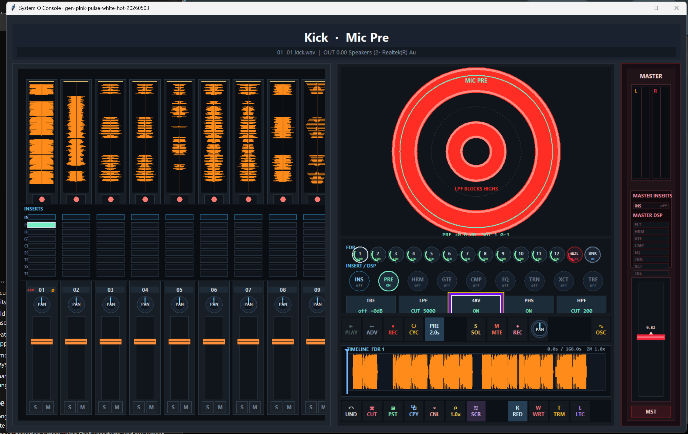
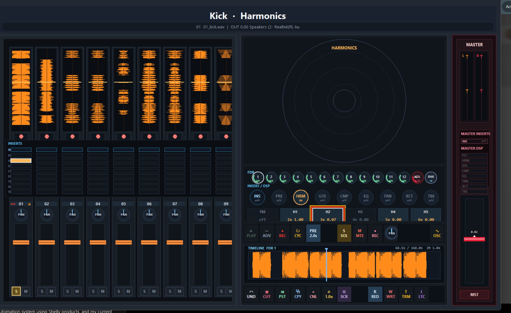
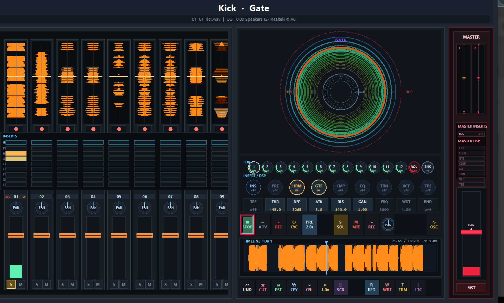
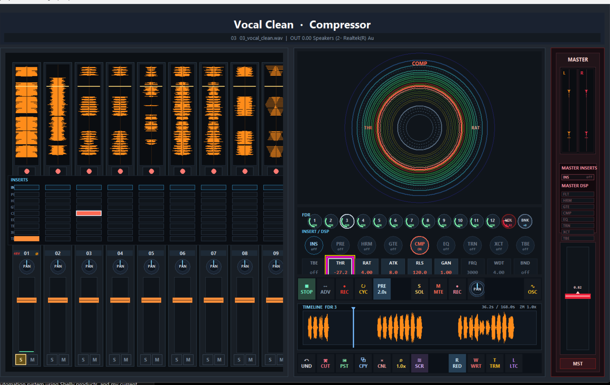
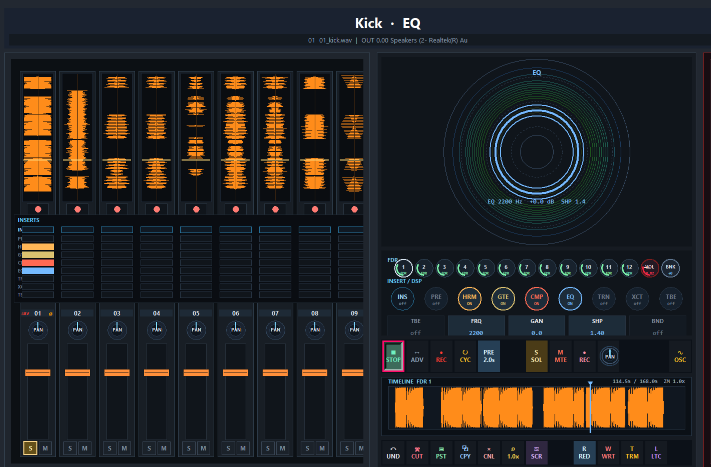
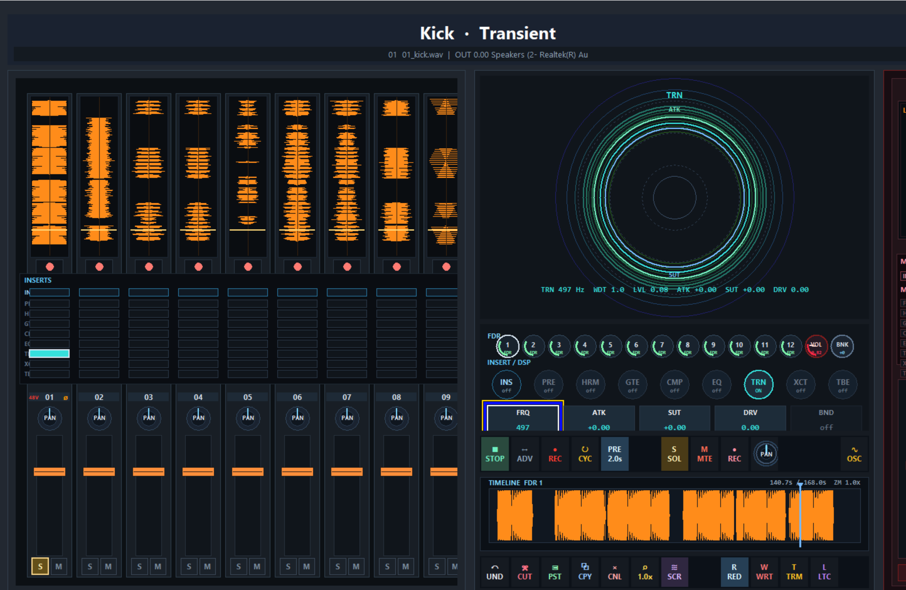
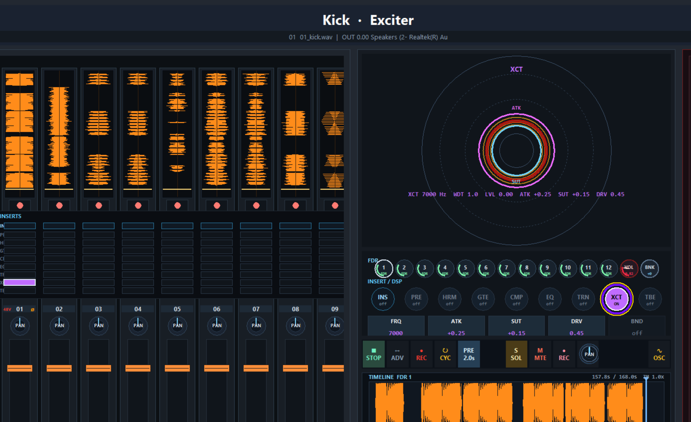

GIG
A complete musician environment
A player walks in, opens their Rig, joins the other musicians, rehearses with in-ear monitoring,
talkback, sheet music, wireless instruments, then records through Cube or System Q analog racks and
plays the finished mix through Venue.
00 — Modular musician environment
One environment for the entire creative process.
GIG starts with the musician's personal Rig, moves into Cube or professional System Q racks for recording,
gives the software the same editing language as the hardware, then plays the finished mix back through Venue
at the levels the artist prefers.
Step 01
Rig
The personal musician workspace: IEMs, wireless guitar, wireless mics, sounds, pedal-board controls, sheet music, playback, and personal mix.
Step 02
Cube
The compact record path for rehearsal, capture, and software-based sessions without the full professional rack system.
Step 03
Racks
The professional path: input cards, preamp cards, dynamics, EQ, output cards, tube color, and tape before conversion.
Step 04
Software
System Q gives the same channel, dynamics, EQ, aux, timeline, routing, and mix sections a visual editing surface.
Step 05
Venue
When the mix is done, play it back and translate it live at the preferred level relationships.
01 — Rig
The musician's personal workspace.
Rig is where the session starts. It contains the musician's in-ear monitor mix, wireless guitar input,
wireless vocal or instrument mics, sounds, playback, patches, sheet music, talkback, and pedal-board style
control. It is the player's instrument interface and personal mix station.
When other musicians plug in, their Rigs join the same session. Players can hear each other, talk to each other,
share charts or sheet music, rehearse parts, and keep their own personal monitoring without leaving the creative flow.
02 — Cube
The compact recording path.
Cube is the fast modular I/O path into GIG. A musician can rehearse, monitor, play back, and record through
the software without bringing the full System Q rack system online.
This is the lightweight path for writing, rehearsal, smaller capture, or direct software sessions. It keeps the
same musician workflow as the rack system, so a session can start simple and move up to the professional path
when the sound needs analog cards, tape, or dedicated output color.
03 — Professional recording path
System Q Racks.
After rehearsal, the band can leave the simple Cube path and hit the studio-grade analog core. The racks split
into input rack and output rack, so the source can be captured through one
identity and played back or printed through another.
Both racks are card frames: every slot ships with an analog PCB card, and every card pulls and swaps.
The input side is the capture chain: preamp cards, dynamics cards, console EQ cards, tone cards, and tape hit.
The output side is the analog playback chain: a 32-to-12 converter returns the mix to 12 analog channels,
those channels hit the output cards, and the rack mixes down to the stereo two-bus so monitoring stays analog.
03a — Preamp, dynamics, EQ, and output cards
Record through one world. Print through another.
The input cards are the first serious sound decision after the musician is ready to record: preamp identity,
dynamics culture, console EQ, and tone. The output cards are the analog playback decision after the take
sounds right: 32 channels convert back down to 12 analog channels, then those 12 channels pass through bus
identity, master tone, tube or summing color, tape, and Venue handoff before the stereo two-bus.
Input Path
Mic / instrument → historic input card → Tape Cylinder → A/D → DAW.
Output Path
32 digital outputs → 32-to-12 converter → 12 analog channels → output cards → stereo two-bus.
Always Analog Monitoring
Playback returns through the 12 analog channels before the two-bus, so the reference is heard through hardware, not just software.
Magnetic Buffer
Hot analog card output saturates physically before conversion, turning overload into density instead of hard clipping.
Input Cards — capture identities
Output Cards — print identities
Output
Abbey Road
Inspired
Classic print chain
03b — Tape Converter
Tape before conversion, inside System Q.
The Tape Converter is where the analog-first path becomes the record path. Input cards feed bias/profile
cards, the magnetic converter stage, repro electronics, and the 12-channel A/D path into Console. On playback,
the 32-to-12 output converter brings the mix back through 12 analog channels before the stereo two-bus.
01
Input cardsAnalog capture cards set the source identity before the magnetic stage.
02
Bias cardsPCI-style profile cards shape record drive, bias, and magnetic behavior.
03
Magnetic converterThe signal hits the head block and magnetic surface before A/D.
04
System QRecord through 12-channel A/D, then play back through 32-to-12 conversion into the analog two-bus.
Input Rack — historic capture cards
In · Slot 01
Capture Identity
Abbey Road-inspired capture
Sausalito Record Plant / API-inspired
Zeppelin Mobile / Neve-inspired
Zappa UMRK / Harrison-Trident-inspired
Tom Scholz Basement-inspired
Clean / transparent
In · Slot 02
Dynamics Culture
1176-style FET
LA-2A-style opto
dbx 160-style VCA
Distressor-style
Vari-mu
In · Slot 03
Console EQ
Pultec-style EQP-1A
Massive Passive-style
API-style 550
Neve-style 1081
In · Slot 04
Tone / Tape Hit
12AX7 tube stage
Class A solid state
Transformer color
Harmonic exciter
Tape Cylinder send
Output Rack — historic print cards
Out · Slot 01
Print / Bus Identity
SSL bus-inspired
RCA New York Church-inspired
Les Paul Studio-inspired
Bill Putnam / United-inspired
Power Station print-inspired
Out · Slot 02
Master Tone
Pultec-style master
Neve-style master
Mastering parametric
Tilt / shelf
Out · Slot 03
Tape / Summing Color
System Q Tape Cylinder
Double-tape print
Transformer summing
Tube summing
Discrete Class A
Out · Slot 04
Monitor / Venue Out
Reference-flat
Console-voiced
Mastering insert
Venue translation
Card names are illustrative voicings. References identify historic recording worlds and circuit behaviors that
inspire each profile, not licensed clones or literal reproductions.
04 — Console Software
Console software is the operating surface for System Q. Active desktop build
This is not a separate DAW metaphor sitting beside the hardware. It is the screen version of the System Q
console: channel targets, group targets, aux returns, master, preamp, filter, dynamics, EQ, tube, tape, routing,
sends, automation, transport, timeline, and monitoring in one shared control language.
A musician can start in Rig, capture through Cube, or record through the System Q racks, then move into this
console surface without changing how the signal path is understood. The software follows the same order as the
rack: input, tone, dynamics, EQ, tape/tube color, routing, analog return, two-bus, reference, and Venue playback.
The current build uses target banks for CH / GRP / AUX / MST. Each target exposes the active
stage grid, so the operator can move from channel capture to group shaping, aux effects, master output, and
the 32-to-12 analog return path without leaving the same visual and tactile system.

Stage 01
Mic Pre
The source enters here. Mic Pre handles the first electrical decisions: gain staging, 48V, polarity, high-pass, low-pass, and cleanup before the rest of the strip touches the sound.
TBE · LPF · 48V · PHS · HPF

Stage 02
Harmonics
Harmonics adds identity after the preamp: second, third, fifth, and higher-order color for density, analog character, saturation, and source-specific tone.
H1 · H2 · H3 · H4 · H5

Stage 03
Gate
The gate stage controls bleed, noise, decay, and spill. It is built for drums, amps, vocals, and any source where the room or noise needs to be shaped before compression.
THR · DEP · ATK · RLS · GAN · FRQ · WDT · BND

Stage 04
Compressor
Compression is the control and glue stage. It levels vocals, holds bass, pushes drums forward, and gives groups or the mix bus movement without leaving the console view.
THR · RAT · ATK · RLS · GAN · FRQ · WDT · BND

Stage 05
EQ
EQ is the main tone-shaping view. Frequency, gain, shape, and band selection stay inside the same polar editor, so the engineer is not jumping between detached plugin windows.
FRQ · GAN · SHP · BND

Stage 06
Transient Designer
Transient shaping controls the front edge and body of the sound. It adds punch, trims sustain, focuses attack, or changes impact without rebuilding the chain.
FRQ · ATK · SUT · DRV · BND

Stage 07
Exciter
Exciter is the clarity and presence stage. It brings air, bite, lift, and detail forward when the source needs to cut through without just turning it up.
FRQ · ATK · SUT · DRV · BND

Stage 08
Tube
Tube is the final analog-color stage inside the software path. It adds drive, density, warmth, and source weight before routing, print, analog return, or Venue playback.
FRQ · DRV · BND
05 — Console
Console
Console is the physical command surface once the session moves from musician Rigs into recording, playback,
and mix decisions. Its 6‑DOF SpaceMouse-style edit control lets the operator select directionally and turn
values without jumping across unrelated knobs, plugin windows, and menus.
It is the shared tactile layer across the whole ecosystem: touch focus, transport, monitoring, faders,
and parameter editing in one surface.
06 — Venue
Playback at the preferred levels.
Venue is where the finished mix becomes the playback target. The artist can listen back at the level
relationships they prefer, then let Venue translate that balance into the room.
The goal is simple: finish the mix, play it back, hear it at the intended levels, and let the system help
carry that reference into live playback.
Start Fast
Walk in with Rig, connect the band, open the session, monitor, talk, and rehearse without building a separate headphone world.
Record Two Ways
Use Cube and GIG software for the compact path, or route through System Q cards and Tape Converter for the analog-first path.
Reference The Take
Play back the finished recording as the shared reference before the mix decisions drift away from the performance.
Carry It Live
Console and Venue keep the recorded balance connected to the room, so the live system starts from the finished session.
07 — The Engine
Business for the sake of humanity